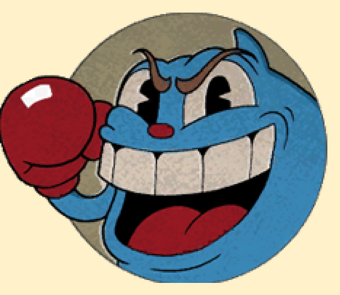
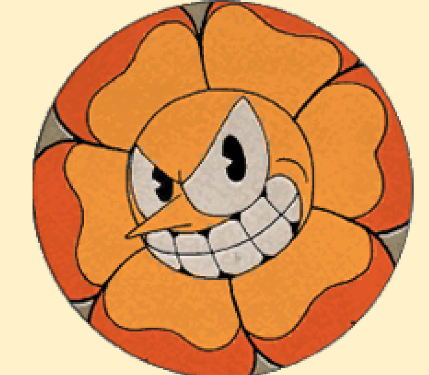
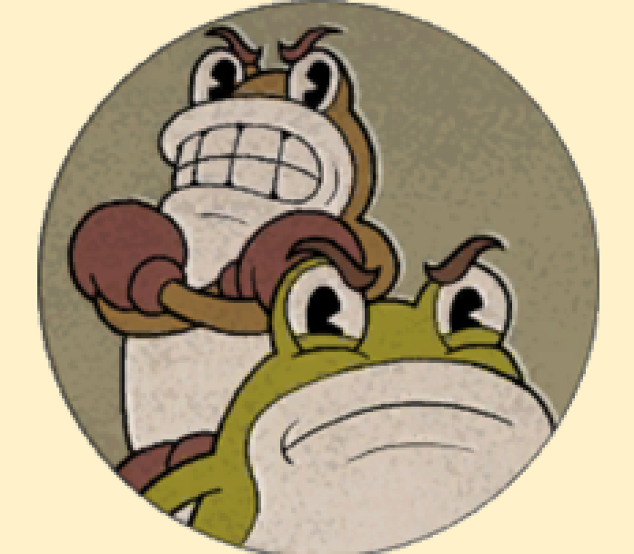
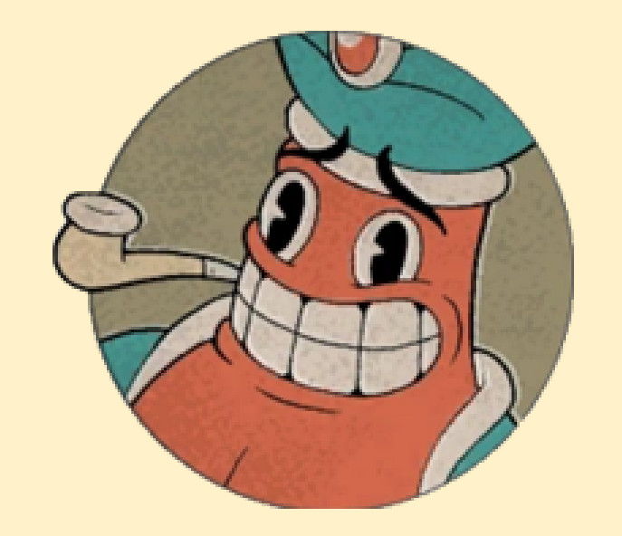
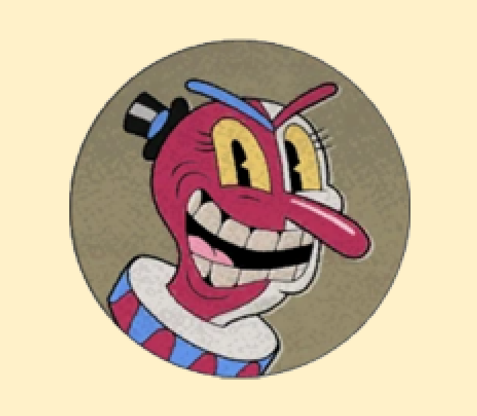
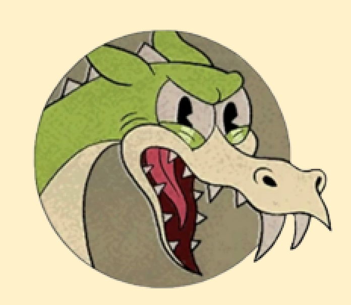
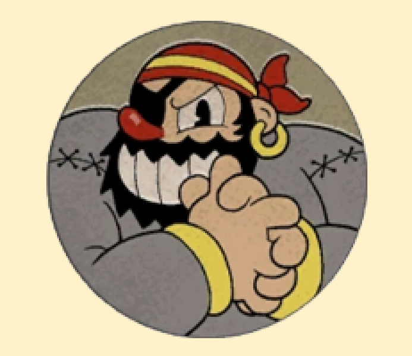
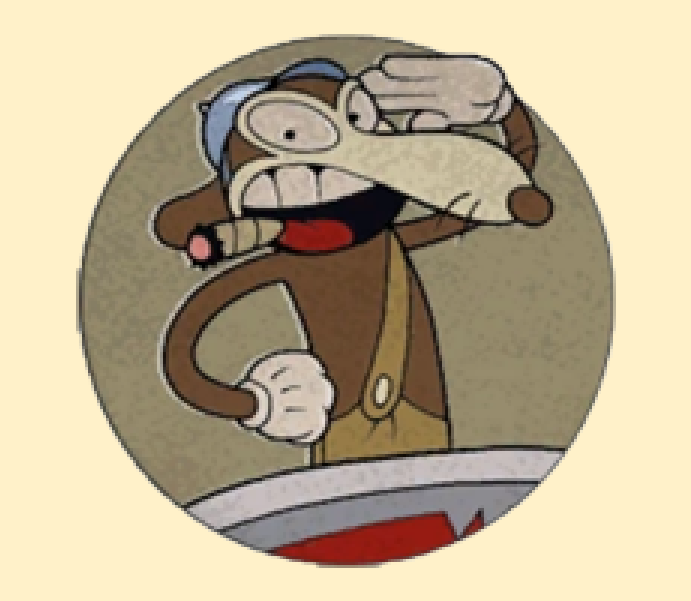
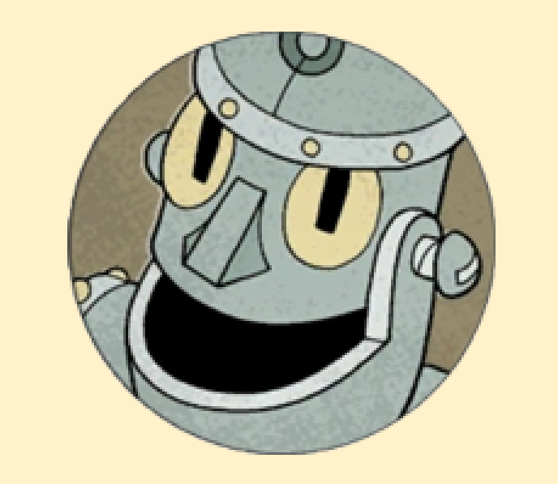

Genni Gelatina

Genni Gelatina è uno dei primi boss di Cuphead. Appare nel livello "Ruse Of An Ooze".

Genni Gelatina è uno dei primi boss di Cuphead. Appare nel livello "Ruse Of An Ooze".

Floris Rivoltella è il boss del livello intitolato "Floral Fury".

Ribby e Croaks sono una coppia di boss in Cuphead. Li si incontra e li si affronta nel livello Clip Joint Calamity.

Djimmi The Great è uno dei tre boss inizialmente disponibili dopo aver raggiunto quest'isola. È il boss con il maggior numero di fasi dell'intero gioco, per un totale di cinque.

Beppi the Clown è uno dei tre boss inizialmente disponibili dopo aver raggiunto quest'isola.

Grim Matchstick si sblocca dopo aver sconfitto Beppi the Clown, oppure prendendo una scorciatoia. Il suo livello si intitola Fiery Frolic.

Brineybeard è il secondo dei due boss inizialmente disponibili dopo aver raggiunto quest'isola.

Werner Werman si sblocca dopo aver completato uno dei livelli di tipo "Run 'n' Gun", Il suo livello si intitola Murine Corps.

Sconfiggerlo permette di accedere a Sally Stageplay. Il suo livello si intitola Junkyard Jive!.

King Dice è l'unico boss inizialmente disponibile dopo aver fatto il proprio ingresso a Inkwell Hell. Sconfiggerlo permette di accedere a The Devil. Il suo livello si intitola "All Bets Are Off!". Non è possibile affrontarlo in modalità Semplice (Simple Mode).

The Devil, per il quale Cuphead e Mugman raccolgono i contratti delle anime, funge da antagonista principale e boss finale del gioco. Si sblocca dopo aver sconfitto King Dice. Il suo livello si intitola "One Hell Of A Time". Non è possibile affrontarlo nella modalità Semplice (Simple Mode).